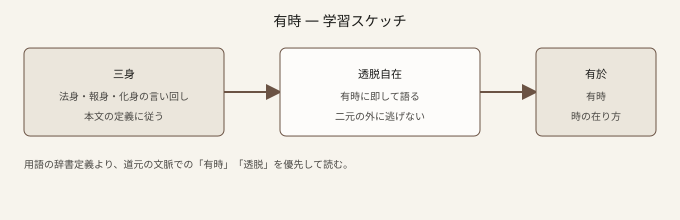

七十五巻 巻一覧
正法眼藏第二十 有時
（ローカル生成の全文: 全文ページ）
なぜ優先するか（思想史・学習上の位置）
「有時」は、道元の思想の真髄が凝縮されている巻の一つと広く読まれます。ここでは「時間」が外から測る軸ではなく、有そのものがすでに時として現成している、という立場が正面から展開されます。後の「經歴（けいりゃく）」や大寂・藥山の因縁まで含めると分量は大きいですが、まず古佛の偈から「有はみな時なり」までを確実に押さえるのが近道です。
語彙の足場
- 有時：単なる「あるとき」ではなく、存在と時の相即を示す用語として読みます。
- 而今（にこん）：今こことしての現成。去来に捕らわれない用法が鍵です。
- 盡界・頭頭物物：あらゆる事物が、それぞれが時として在る、という眺めの下語です。
- 經歴：春の喩で説かれる「通過」ではなく、外に境を立てない経歴としての学び。
本文（冒頭・抜粋）
抜粋は doc/正法眼蔵.txt に準拠します。原文の参照元:
https://shomonji.or.jp/zazen/doc/genzou.html
古佛言、
有時高高峰頂立、
有時深深海底行。
有時三頭八臂、
有時丈六八尺。
（中略）
いはゆる有時は、時すでにこれ有なり、有はみな時なり。丈六金身これ時なり、時なるがゆゑに時の莊嚴光明あり。いまの十二時に習學すべし。
図解（スケッチ SVG）

深掘り（教育的メモ）
- 「山河をすぎた」誤解：凡夫の見は、有時を「あるときは三頭八臂、別のときは丈六」と時系列の変身に読み替えがちです。道元はこれを丁寧に弁じ、われに時あるべしという面と、而今としての上山渡河を重ねます。
- 松竹・飛去：時が「飛び去る」イメージだけに捉えると間隙が生じる、と戒めます。語の滑らかさに騙されず、原文の往復を追ってください。